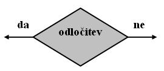
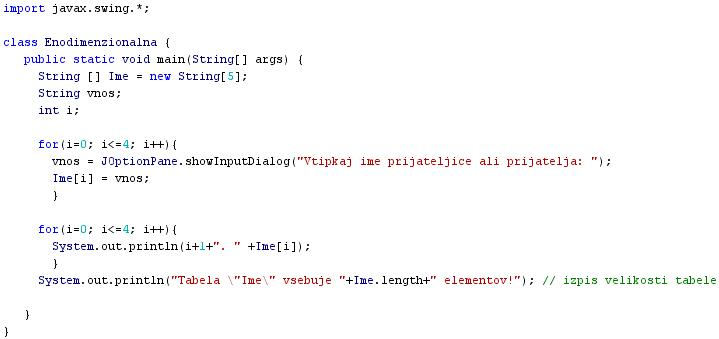

SELEKCIJA ALI IZBIRA
- Nizko strukturirani programi so pogosto sestavljeni iz enostavnih struktur nadzora poteka programa.
- Enostavne strukture nadzora poteka programa so sekvenca ali zaporedje, selekcija ali izbira ter iteracija ali ponavljanje.
- Selekcija ali izbira je struktura, ki omogoèa izvajanje razliènih sekvenc.
- Katera od predvidenih in zapisanih sekvenc, ki jih selekcija vsebuje, se bo dejansko izvedla, pa je odvisno od stanja spremenljivk, ki jih vsebuje pogoj, ki je postavljen v stavku, ki predstavlja selekcijo.
- Primeri ukazov, ki predstavljajo selekcijo v programskem jeziku Java, so stavek "if", stavek "if-else" in stavek "switch".
- V diagramu poteka je selekcija predstavljena z odloèitvenim blokom oziroma s simbolom za odloèitev.
- Primer:
- Besedni opis problema in rešitve.
- "Zapiši program, ki bo inicializiral enodimenzionalno tabelo. Ta naj vsebuje 5 elementov. Program naj omogoèi vpis imen petih prijateljev ali prijateljic v inicializirano enodimenzionalno tabelo.": Vprašamo se, kaj vse bomo morali postoriti za rešitev problema in to opišemo v nekaj stavkih. Potek reševanja problema poskusimo premisliti èim bolj natanèno.
- Inicializiraj enodimenzionalno tabelo "Ime", ki ima pet elementov.
- Uporabi zanko s števcem, ki bo tekel od 0 do 4 s korakom 1. Ob vsakem preletu zanke naj program pozove uporabnika k vnosu novega imena v tabelo.
- Uporabi še eno zanko s števcem, ki bo tekel od 0 do 4 s korakom 1. Ob vsakem preletu zanke naj program izpiše vrednost posameznega elementa v tabeli "Ime".
- Na koncu naj program izpiše še poroèilo o dolžini izpisane enodimenzionalne tabele. To poroèilo naj bo zapisano v obliki lepega slovenskega stavka.
VAJA 49:
- V okolju za pisanje izvorne kode v jeziku Java, za prevajanje in za interaktivno delo zapiši program "Enodimenzionalna". Pomagaj si s sliko.
- Kodo lahko tudi kopiraš iz te datoteke in jo prilepiš v okolje, v katerem pišeš programèke. Pozor: koda, ki jo boš kopiral/a, vsebuje eno, dve, tri ali štiri napake. Èe želiš, da bo program deloval, moraš napake odkriti in jih odpraviti.
- Izvorno kodo shrani pod imenom "ImePriimek49.java". ImePriimek je seveda tvoje lastno ime in priimek.
- Datoteko "ImePriimek49.java" prevedi.
- Prevedeno datoteko zaženi, preveri rezultat v interaktivnem oknu in poklièi profesorja, da vidi rezultat.
- Sam/a skonstruiraj diagram poteka v tej uèni enoti in ga nariši v zvezek.
1. Vprašanja:
1. Naštej enostavne strukture nadzora poteka programa.
2. Kaj omogoèa selekcija pri strukturiranem programiranju?
3. Naštej ukaze, ki omogoèajo selekcijo pri programskem jeziku Java.
4. Kakšna je razlika med ukazom "if" in ukazom "if-else"? Kako se ta razlika pokaže pri izvajanju programa? Pomagaj si z uèno enoto 37.
5. Kakšna je razlika med ukazom "if-else" in ukazom "switch"? Kako se ta razlika pokaže pri izvajanju programa? Pomagaj si z uèno enoto 37.
6. Katero od treh enostavnih struktur nadzora poteka lahko najdemo v programu te uène enote?
7. Zapiši tipe spremenljivk, ki smo jih deklarirali v programu te uène enote.
8. Zapiši imena spremenljivk, ki smo jih deklarirali v programu te uène enote.
9. Kaj je naloga prve iteracije v programu iz te uène enote?
10. Kaj je naloga druge iteracije v programu iz te uène enote?
2. Zapiši od ene do pet kljuènih besed, ki povzemajo vsebino te uène enote.
3. Povezave do dodatnih informacij.
Spletni priroènik proizvajalca programskega okolja Java. To je podjetje Sun.
|